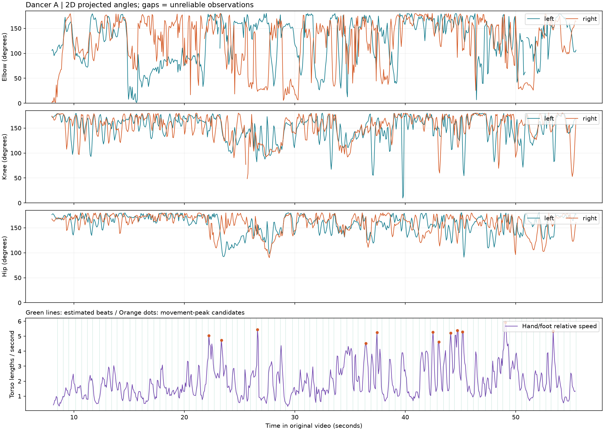
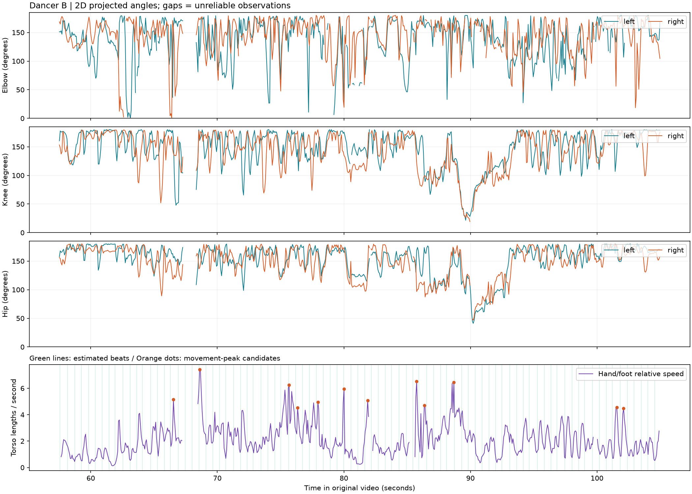

테스트 영상 1 · Sapiens2 0.4B · 모델 입력 1024×768 · 약 14.99 FPS 분석
녹색 선은 추정 관절, 파란 상자는 추적 대상입니다. 상단의 BEAT는 음악에서 추정한 비트입니다. 아래 동작 후보의 시각을 누르면 해당 장면으로 이동합니다.
기본 템포 추정: 109.3 BPM · 반박/배박 해석과 현장 소음에 따라 다른 결과가 나올 수 있습니다.
분석 구간 8.0–55.5초 · 사람 검출 712/712 프레임 · 손·발 속도 산출 가능 99.6%

| 관절 | 관측 각도 5–95백분위 / 중앙값 | 유효 관측 비율 |
|---|---|---|
| 왼쪽 팔꿈치 | 42°–177° / 중앙값 139° | 99.6% |
| 왼쪽 무릎 | 101°–178° / 중앙값 157° | 100.0% |
| 왼쪽 어깨 | 2°–81° / 중앙값 22° | 100.0% |
| 왼쪽 고관절 | 119°–178° / 중앙값 162° | 100.0% |
| 오른쪽 팔꿈치 | 29°–177° / 중앙값 142° | 99.6% |
| 오른쪽 무릎 | 102°–179° / 중앙값 160° | 99.9% |
| 오른쪽 어깨 | 3°–126° / 중앙값 27° | 100.0% |
| 오른쪽 고관절 | 120°–179° / 중앙값 165° | 100.0% |
분석 구간 57.5–105.0초 · 사람 검출 710/712 프레임 · 손·발 속도 산출 가능 95.1%
67.3–68.3초 수치 제외: 댄서와 관객의 겹침으로 관절이 섞인 구간을 수동 검토 후 제외. 원시 좌표는 보존했고 그래프·각도·동작 후보에는 사용하지 않았습니다.

| 관절 | 관측 각도 5–95백분위 / 중앙값 | 유효 관측 비율 |
|---|---|---|
| 왼쪽 팔꿈치 | 62°–177° / 중앙값 147° | 93.1% |
| 왼쪽 무릎 | 86°–179° / 중앙값 158° | 97.6% |
| 왼쪽 어깨 | 3°–125° / 중앙값 36° | 95.6% |
| 왼쪽 고관절 | 96°–179° / 중앙값 162° | 97.6% |
| 오른쪽 팔꿈치 | 71°–177° / 중앙값 151° | 93.7% |
| 오른쪽 무릎 | 83°–178° / 중앙값 153° | 97.5% |
| 오른쪽 어깨 | 4°–127° / 중앙값 33° | 95.2% |
| 오른쪽 고관절 | 98°–178° / 중앙값 158° | 97.1% |
각 구간에서 속도가 두드러지는 후보를 최대 12개 표시했습니다. 자동 동작 분류나 춤 평가 점수가 아닙니다. 먼저 장면을 재생해 실제 동작과 관절 추적을 확인하세요.
시간 차이 = 동작 후보 시각 − 가장 가까운 추정 비트/소리 시작점. +는 이후, −는 이전입니다. 댄서가 세부 리듬·보컬·엇박에 반응할 수 있으므로 0에 가까울수록 좋은 춤이라는 뜻은 아닙니다. 오디오와 영상 사이의 녹화 지연은 별도로 보정하지 않았습니다.
| 장면 이동 | 댄서 | 상대 속도 | 비트와 차이 | 소리 시작점과 차이 |
|---|---|---|---|---|
| A | 5.04 | +63 ms | +83 ms | |
| A | 4.74 | +100 ms | -769 ms | |
| A | 5.45 | +107 ms | +117 ms | |
| A | 4.52 | +89 ms | +89 ms | |
| A | 5.25 | +2 ms | +12 ms | |
| A | 5.28 | +245 ms | -134 ms | |
| A | 4.61 | +150 ms | -159 ms | |
| A | 5.21 | +131 ms | +141 ms | |
| A | 5.38 | +252 ms | +282 ms | |
| A | 5.30 | +101 ms | +101 ms | |
| A | 5.92 | +220 ms | -159 ms | |
| A | 5.35 | +198 ms | +58 ms | |
| B | 5.14 | +244 ms | -135 ms | |
| B | 7.42 | +48 ms | -481 ms | |
| B | 6.26 | +38 ms | +57 ms | |
| B | 4.52 | +146 ms | +156 ms | |
| B | 4.96 | +131 ms | +151 ms | |
| B | 5.96 | +15 ms | +25 ms | |
| B | 5.09 | +237 ms | -52 ms | |
| B | 6.53 | -162 ms | -3 ms | |
| B | 4.71 | -190 ms | +49 ms | |
| B | 6.44 | -50 ms | -50 ms | |
| B | 4.56 | -260 ms | -31 ms | |
| B | 4.47 | +273 ms | -26 ms |
각도·속도 CSV · 63개 관절 좌표·신뢰도 CSV · 동작 후보 CSV · 요약 JSON · 분석 설정 · 분석 영상
원시 포즈 NPZ · 필터 전후 속도 NPZ · 박자·소리 시작점 JSON · 오디오 특징 NPZ
모델은 308개 키포인트를 예측하고, 이 결과에는 몸·손·발 및 얼굴 방향 기준점인 앞 63개를 저장했습니다. 신뢰도 값은 히트맵 점수이며 확률이 아닙니다. 채택 임계값은 0.3입니다.